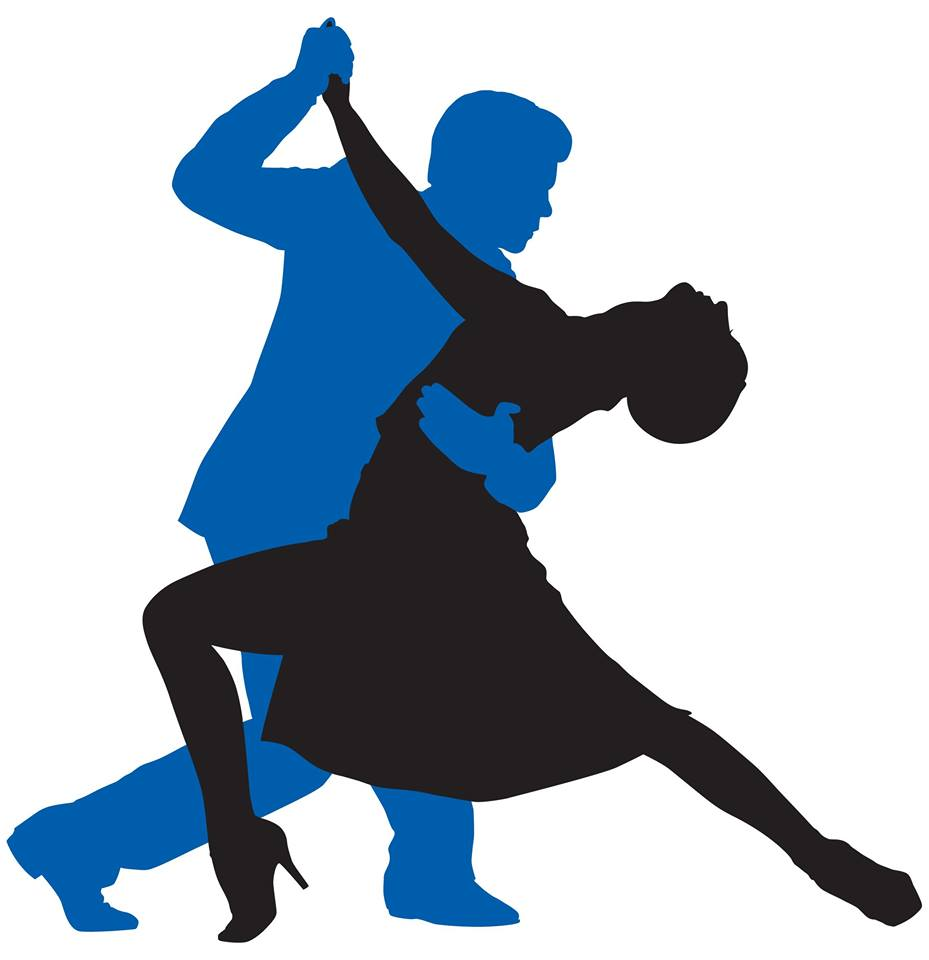
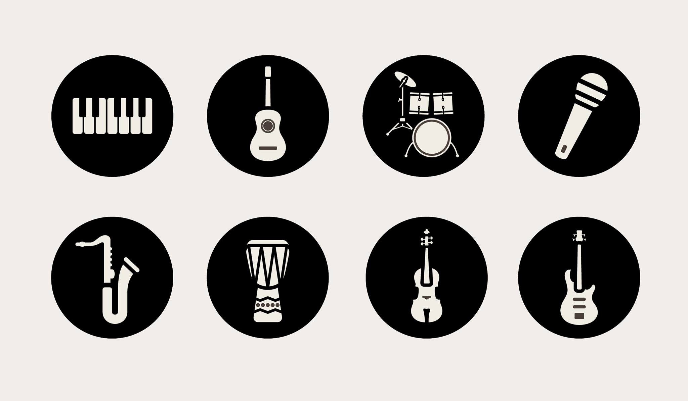

nos dedicamos a la enseñanza del baile popular, trabajo que tomamos con mucha seriedad y responsabilidad ya que muchas personas hasta la fecha han puesto su aprendizaje en nuestras manos.

Dominarás los factores que intervienen en la creación de una obra musical: los principios estilísticos, los parámetros musicales y la relación de la música con la sociedad. Serás capaz de aplicar los criterios de interpretación historicista a una obra musical. Estarás preparado/a para llevar a cabo actividades de interpretación e investigación propias del ejercicio profesional de la música, desde diferentes criterios estilísticos y enfoques metodológicos. Podrás argumentar la toma de decisiones en su actividad interpretativa e investigadora, utilizando para ello criterios científicos. Si sigues el itinerario profesionalizador, obtendrás una formación de alto nivel en violín, violonchelo y piano. Si escoges el itinerario investigador, conseguirás una sólida preparación metodológica que te permitirá acceder a programas de doctorado de investigación musical.